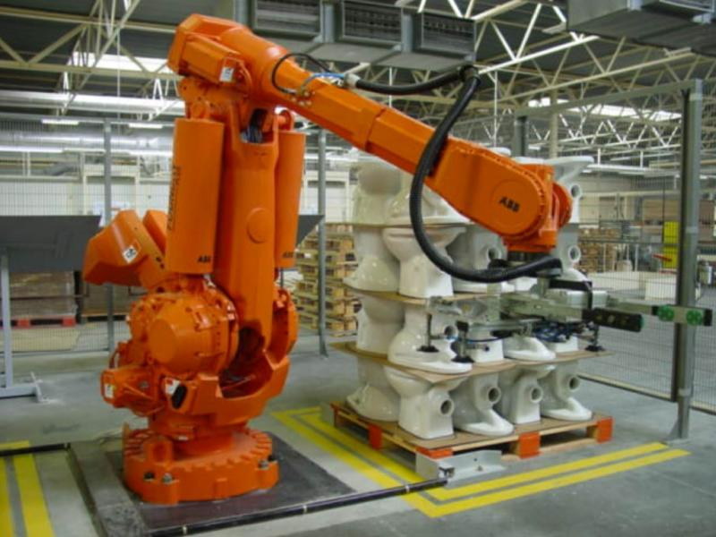

TIPOS DE ROBÔS
ROBÔS INDUSTRIAIS
Esses sistemas apresentam configurações diversas com formatos distintos, sendo utilizados para automatizar indústrias em várias áreas, incluindo eletromecânica, alimentícia, de cosméticos e outras, cada uma com suas funções específicas. Segundo a ISO (Organização Internacional de Normalização), são descritos como “manipuladores versáteis que são controlados de forma automática, reprogramáveis e que podem ser programados em três ou mais eixos”. Geralmente, eles são formados por braços móveis, conexões, articulações, motores e implementos, funcionando como a “mão” do robô. O progresso dos robôs industriais está amplamente relacionado a duas tecnologias essenciais para seu aprimoramento. O “telecomando” é um mecanismo que possibilita a operação de dispositivos, que pode variar desde um controle remoto de TV até a realização de exames de imagem. Por outro lado, o “controle numérico” é uma técnica que ajusta os movimentos de máquinas por meio da interpretação de códigos alfanuméricos. A grande vantagem de utilizar um robô industrial é a redução nos gastos com mão de obra, assim como a maior adaptabilidade que ele oferece ao setor industrial. Ademais, esses robôs podem aumentar a eficiência das indústrias e aprimorar as condições de trabalho ao realizar atividades que envolvem altos níveis de risco. Cada movimento do robô é calculado pela cinemática, para o robô ir do ponto A ao ponto B é descrito com uma notação, calculando o ângulo e a velocidade exata para cada movimento. O robô manipulador como exemplo, é formado por vários corpos rígidos unidos pelas juntas, cada ligamento pode ser controlado por um número de 0 a “n”, o ligamento 0 é a parte que conecta o robô ao chão ou a sua base de trabalho, ele é considerado o ponto de partida. Já o efetuador é considerado o último ligamento, sendo numerado como “n”. O sistemas de coordenadas é um ponto importante para a movimentação da estrutura de um robô, nela existe o sistema de coordenadas base,e também do ligamento e do efetuador, esse sistema permite que o robô execute tarefas de alta precisão. A notação de Denavit e Hartenberg, é um método para escrever as equações cinemáticas de um manipulador, que consistem em quatro parâmetros, sendo eles “d” distância do deslocamento, “θ” ângulo de rotação, “r” distância do ligamento e ”α” ângulo de torção.
ROBÔS COLABORATIVOS
A indústria experimenta contínuo desenvolvimento, impulsionado pelo avanço tecnológico e pelas inovações da Indústria 4.0. Nesta nova fase, robôs colaborativos emergem, elevando a produção e a segurança laboral. Dados da Universal Robots indicam a perda de mais de 104 milhões de dias de trabalho devido a acidentes e fatalidades. A tecnologia redefine as operações fabricantes, promovendo métodos de produção flexíveis, ágeis e adaptáveis às demandas industriais atuais, especialmente com a introdução dos robôs colaborativos. Diferentemente dos robôs industriais, que exigem barreiras físicas de segurança, os robôs colaborativos operam junto a trabalhadores, oferecendo maior flexibilidade e agilidade, além de programação simplificada. A robótica colaborativa, um campo da engenharia, pesquisa e cria robôs para interação segura e flexível com humanos. Seu objetivo principal é a colaboração entre tecnologia robótica e seres humanos em ambientes industriais. Para isso, estes robôs possuem sensores, câmeras e sistemas de segurança, que lhes permitem reagir adequadamente ao entorno. Os cobots auxiliam diversas indústrias, como a automotiva, executando tarefas de risco como soldagens, manuseio de peças pesadas e operações logísticas.
